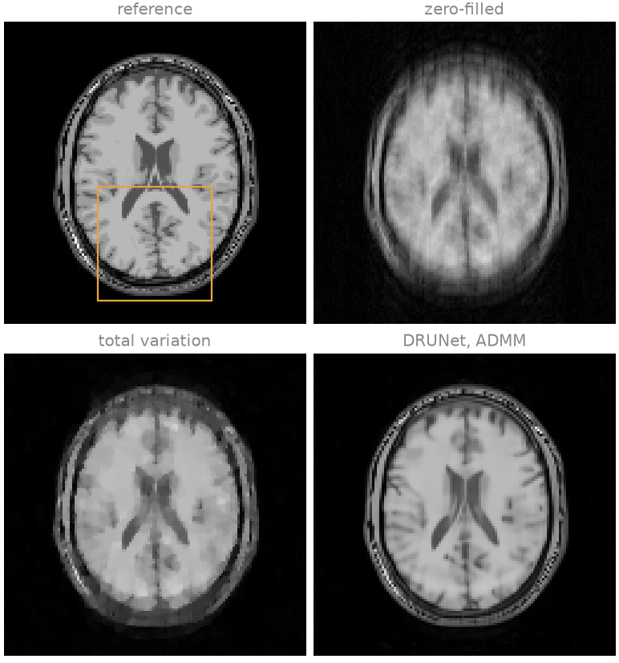
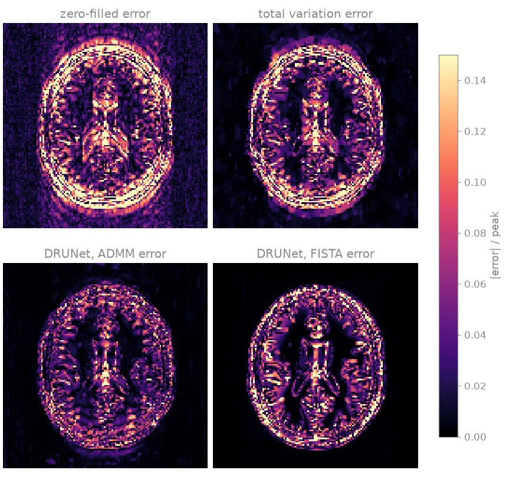
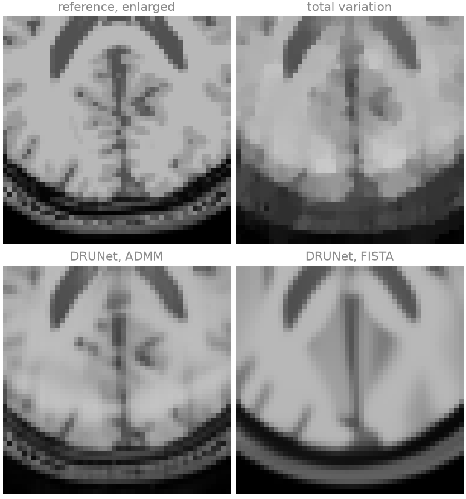
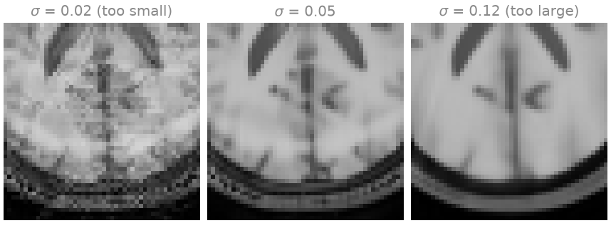

Note
Go to the end to download the full example code.
Plug-and-play denoisers#
This lesson regularizes an undersampled, noisy Cartesian SENSE reconstruction with a pretrained image denoiser in place of a specified penalty, and compares the result with total-variation regularization of the same data. The aim is to show how a denoiser enters a proximal iteration, what it improves on a hand-crafted penalty, and how its noise level plays the role of the regularization weight.
A proximal iteration such as ADMM or FISTA uses the regularization term only through its proximal operator,
which is the maximum a posteriori estimate of an image \(x\) observed as \(v\) in white Gaussian noise, under the prior \(\exp(-g)\): the proximal operator is a denoiser. Plug-and-play regularization [1] [2] replaces it by any image denoiser \(D_\sigma\), without writing down \(g\). Each iteration alternates a step towards consistency with the measured k-space and a denoising step; the noise level \(\sigma\) of the denoiser takes the role of the regularization weight.
The denoiser is DRUNet [3], a convolutional network with the weights
distributed by deepinv, trained for Gaussian denoising of natural
grayscale photographs, not of MR images.
bartorch.priors.ImplicitPrior converts between the complex image of
the reconstruction and the real planes the network takes; the iterations are
bartorch.optim.admm() and bartorch.optim.fista(), unchanged.
The phantom is the BrainWeb slice of Regularized reconstruction; the cell that builds it is hidden on this page and present in the downloadable script.
Learning objectives
Wrap a pretrained denoiser as
bartorch.priors.ImplicitPriorand pass it tobartorch.optim.admm()andbartorch.optim.fista()in place of abartorch.priorsterm.Compare the result with total-variation regularization on the same data, in the images, the error maps and an enlarged region.
Vary the denoiser’s noise level and recognize under- and over-regularization.
It follows Parameter maps straight from k-space. The next lesson, MoDL, on BART’s ADMM, trains the denoiser through the iteration.
The pretrained weights, about 125 MB, are downloaded on the first call. The network runs once per iteration, which dominates the run time of this example on a CPU.
import csv
from pathlib import Path
import brainweb_dl
import numpy as np
import torch
from brainweb_dl import get_mri
from deepinv.models import DRUNet
import bartorch
import bartorch.tools as bt
from bartorch import linop, optim, priors
SIZE = 128
COILS = 8
ACCELERATION = 4
CALIBRATION = 16
Acquisition#
A quarter of the phase encodes (\(R = 4\)), drawn from a variable density around a fully sampled ACS region of 16 lines, with complex Gaussian noise of variance \(10^{-3}\) per sample of the unitary transform: the acquisition of Regularized reconstruction, where both noise amplification and incoherent aliasing limit an unregularized reconstruction. The sensitivities are the ones the data were simulated with, so that the comparison below concerns the regularization alone; Coil sensitivity calibration compares their estimation.
encodes = torch.arange(SIZE) - SIZE // 2
centre = (encodes.abs() < CALIBRATION // 2).to(torch.float32)
drawn = torch.multinomial(
(1.0 + 2.0 * encodes.abs() / SIZE) ** -3.0 * (1.0 - centre),
SIZE // ACCELERATION - CALIBRATION,
replacement=False,
generator=torch.Generator().manual_seed(11),
)
lines = centre.clone()
lines[drawn] = 1.0
pattern = lines.reshape(SIZE, 1).to(torch.complex64)
A = linop.CartesianSense(sensitivities, (SIZE, SIZE), pattern=pattern)
data = bt.noise(A(image), n=1e-3, s=42) * pattern
A specified regularizer#
Total variation under ADMM is the reference point, at the best of the weights 0.002, 0.005, 0.01 and 0.02 judged by NRMSE and SSIM against the phantom.
total_variation = optim.admm(data, A, priors.TotalVariation((-1, -2), 0.01), maxiter=60, rho=0.1)
A denoiser as the proximal step#
spatial=2 states that the network operates on two-dimensional planes of
shape (n, channels, y, x). ImplicitPrior scales
each image to unit peak modulus, denoises its real and imaginary parts as
two grayscale planes, and scales the result back, so sigma is in units of
the image’s peak. The network is evaluated without gradients, since nothing
is trained here. Each iteration costs one application of the network.
ITERATIONS = 30
denoiser = DRUNet(in_channels=1, out_channels=1, pretrained="download").eval()
prior = priors.ImplicitPrior(denoiser, sigma=0.05, spatial=2)
with torch.no_grad():
admm = optim.admm(data, A, prior, maxiter=ITERATIONS, rho=0.2)
fista = optim.fista(data, A, prior, maxiter=ITERATIONS)
reconstructions = {
"zero-filled": A.H(data),
"total variation": total_variation,
"DRUNet, ADMM": admm,
"DRUNet, FISTA": fista,
}
for name, estimate in reconstructions.items():
error = bt.nrmse(image.abs(), estimate.abs(), scaled=True)
similarity = bt.ssim(image.abs(), scaled(estimate, image))
print(f"{name:>16} NRMSE {error:.3f} SSIM {similarity:.3f}")
Downloading: "https://huggingface.co/deepinv/drunet/resolve/main/drunet_deepinv_gray_finetune_26k.pth?download=true" to /home/runner/.cache/torch/hub/checkpoints/drunet_deepinv_gray_finetune_26k.pth
0%| | 0.00/125M [00:00<?, ?B/s]
0%| | 128k/125M [00:00<06:14, 349kB/s]
3%|▎ | 3.38M/125M [00:00<00:13, 9.58MB/s]
13%|█▎ | 16.2M/125M [00:00<00:02, 44.7MB/s]
19%|█▊ | 23.1M/125M [00:00<00:02, 50.2MB/s]
26%|██▌ | 32.2M/125M [00:00<00:01, 63.0MB/s]
32%|███▏ | 39.8M/125M [00:01<00:01, 45.6MB/s]
37%|███▋ | 45.9M/125M [00:01<00:01, 49.5MB/s]
42%|████▏ | 51.9M/125M [00:01<00:01, 50.5MB/s]
47%|████▋ | 59.0M/125M [00:01<00:01, 56.3MB/s]
52%|█████▏ | 65.1M/125M [00:01<00:01, 33.9MB/s]
57%|█████▋ | 71.5M/125M [00:01<00:01, 39.5MB/s]
65%|██████▍ | 80.4M/125M [00:01<00:00, 50.1MB/s]
70%|██████▉ | 86.6M/125M [00:02<00:01, 35.8MB/s]
74%|███████▎ | 91.6M/125M [00:02<00:01, 30.1MB/s]
81%|████████ | 100M/125M [00:02<00:00, 40.1MB/s]
88%|████████▊ | 110M/125M [00:02<00:00, 51.3MB/s]
94%|█████████▎| 117M/125M [00:02<00:00, 53.3MB/s]
99%|█████████▉| 123M/125M [00:03<00:00, 40.8MB/s]
100%|██████████| 125M/125M [00:03<00:00, 41.4MB/s]
zero-filled NRMSE 0.199 SSIM 0.482
total variation NRMSE 0.161 SSIM 0.754
DRUNet, ADMM NRMSE 0.103 SSIM 0.893
DRUNet, FISTA NRMSE 0.135 SSIM 0.898



The zero-filled image shows the incoherent aliasing of the random sampling and the noise. Total variation removes most of both, but at its best weight it leaves a blotchy texture across the brain and flattens the gradual intensity variations into patches. The plug-and-play reconstruction under ADMM removes the noise and the aliasing while keeping the tissue boundaries, and its error map is darker inside the brain; in the enlarged region the ventricles and the larger cortical folds are delineated, although the finest sulci are lost. Under FISTA, at the same \(\sigma\), the same denoiser produces a much smoother image, in which the cortical folds have disappeared, and its error lies along every tissue boundary.
The two iterations differ in the step before the denoiser: FISTA takes a gradient step of fixed length on the data term, ADMM solves a quadratic problem that holds the image to the data with weight \(\rho\). The denoiser is therefore applied to different images, and its effective strength differs between the two iterations at the same \(\sigma\). A fixed \(\sigma\) makes neither iteration the minimization of a known objective, so the number of iterations and \(\rho\) enter the result, and are parameters to be chosen like the weight of a specified term. The printed SSIM ranks the over-smoothed FISTA image above the ADMM image: a single figure of merit does not replace looking at the images.
The noise level#
\(\sigma\) is the strength of the prior. A denoiser asked for less noise than the iterate contains leaves residual noise and aliasing in place; one asked for more removes image detail with them.
levels = (0.02, 0.05, 0.12)
with torch.no_grad():
sweep = {
sigma: admm
if sigma == 0.05
else optim.admm(
data,
A,
priors.ImplicitPrior(denoiser, sigma=sigma, spatial=2),
maxiter=ITERATIONS,
rho=0.2,
)
for sigma in levels
}
for sigma, estimate in sweep.items():
error = bt.nrmse(image.abs(), estimate.abs(), scaled=True)
similarity = bt.ssim(image.abs(), scaled(estimate, image))
print(f"sigma {sigma:.2f} NRMSE {error:.3f} SSIM {similarity:.3f}")
sigma 0.02 NRMSE 0.139 SSIM 0.734
sigma 0.05 NRMSE 0.103 SSIM 0.893
sigma 0.12 NRMSE 0.127 SSIM 0.886

At the smallest \(\sigma\) the noise and the aliasing remain as a mottled texture; at the largest the cortex is smoothed into uniform white matter and small structures disappear; the printed errors have their minimum in between.
The denoiser was not trained on MR images, nor for the residual aliasing an undersampled acquisition leaves, which is not white Gaussian noise. The next lesson, MoDL, on BART’s ADMM, trains a network inside the iteration, on the acquisition it is applied to.
References#
Total running time of the script: (0 minutes 52.646 seconds)